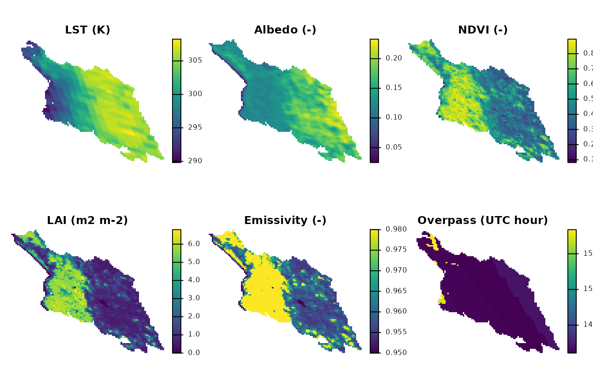
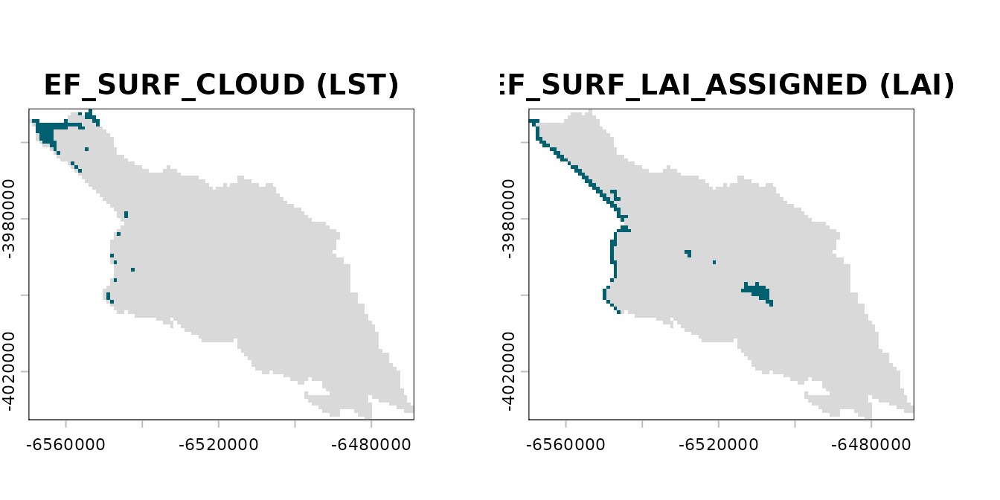
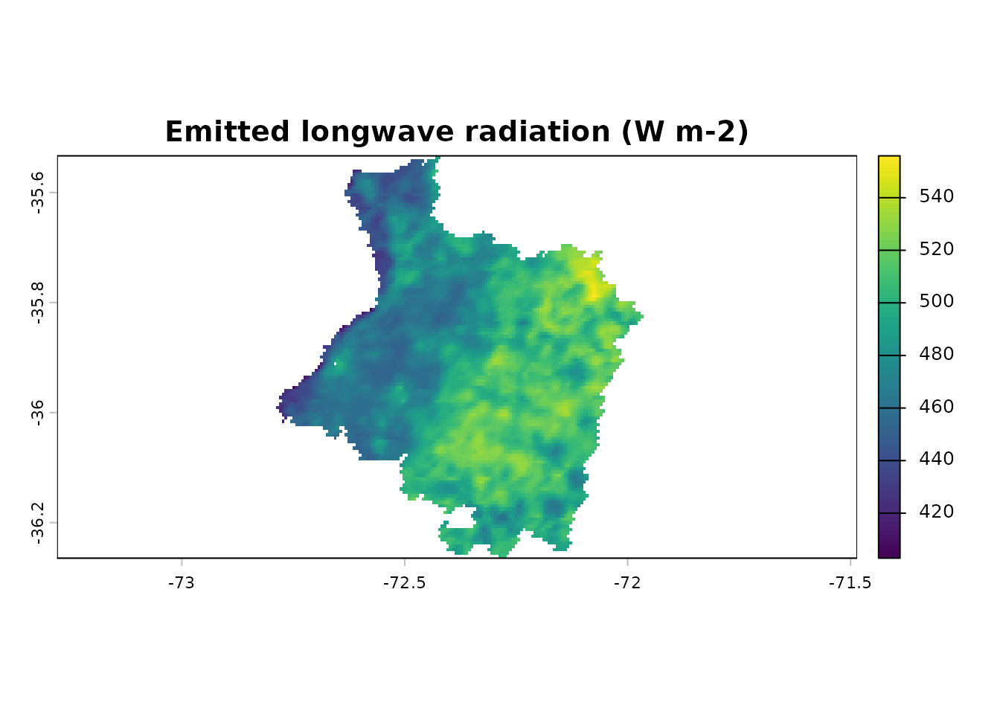

Example scene: Cauquenes, 15 February 2019
Source:vignettes/articles/cauquenes-example.Rmd
cauquenes-example.RmdEarthFlux ships one real MODIS scene, the dataset
cauquenes_modis: the surface state of the METRIC chain over
the Cauquenes province (Maule Region, Chile) for 15 February 2019 (UTC;
Terra overpass), built from the official MODIS collection 6.1 granules
of tile h12v12 with the package’s MODIS preprocessing. This article
shows its layers, how to read its flag words and where it comes
from.
Experimental. EarthFlux 0.1.0 is an experimental release. Most of the options used to build the scene (albedo, assigned LAI of the non-vegetated classes, aggregation) are candidates pending verification; the LAI-based emissivity follows the SEBAL Idaho manual (Waters et al., 2002). The scene is meant for examples, tests and documentation, not for scientific results.
Everything below runs offline from the installed package.
The surface state
The dataset is a packed terra raster;
terra::unwrap() returns the SpatRaster.
library(EarthFlux)
r <- terra::unwrap(cauquenes_modis)
r
#> class : SpatRaster
#> size : 88, 109, 20 (nrow, ncol, nlyr)
#> resolution : 926.6254, 926.6254 (x, y)
#> extent : -6569774, -6468772, -4032674, -3951131 (xmin, xmax, ymin, ymax)
#> coord. ref. : +proj=sinu +lon_0=0 +x_0=0 +y_0=0 +R=6371007.181 +units=m +no_defs
#> source(s) : memory
#> names : lst, albedo, ndvi, lai, emissivity, emis_31, ...
#> min values : 289.82, 0.02475, 0.0821, 0, 0.95, 0.974, ...
#> max values : 308.26, 0.233, 0.896, 6.8, 0.98, 0.984, ...
#> unit : K, -, -, m2 m-2, -, -, ...Each layer carries its unit:
data.frame(layer = names(r), unit = terra::units(r))
#> layer unit
#> 1 lst K
#> 2 albedo -
#> 3 ndvi -
#> 4 lai m2 m-2
#> 5 emissivity -
#> 6 emis_31 -
#> 7 emis_32 -
#> 8 doy -
#> 9 utc_hour h
#> 10 ndvi_lag_days d
#> 11 valid_fraction_albedo -
#> 12 valid_fraction_lai -
#> 13 flags_lst bits
#> 14 flags_overpass_time bits
#> 15 flags_albedo bits
#> 16 flags_ndvi bits
#> 17 flags_lai bits
#> 18 flags_emissivity bits
#> 19 flags_emis_31 bits
#> 20 flags_emis_32 bitsThe grid is the native 1 km sinusoidal grid of the MOD11A1 file.
Cells outside the province are NA in every layer, flag
words included.
vars <- c("lst", "albedo", "ndvi", "lai", "emissivity", "utc_hour")
terra::global(r[[vars]], c("min", "max", "mean"), na.rm = TRUE)
#> min max mean
#> lst 289.82000 308.26000 302.2553063
#> albedo 0.02475 0.23300 0.1531856
#> ndvi 0.08210 0.89600 0.5433044
#> lai 0.00000 6.80000 2.4266808
#> emissivity 0.95000 0.98000 0.9668765
#> utc_hour 14.10953 15.83827 14.1766055Maps
Land surface temperature (K, MOD11A1 LST_Day_1km),
white-sky shortwave albedo (MCD43A3), NDVI (MOD13A2 16-day composite),
LAI (m2 m-2, MCD15A2H 8-day composite), broadband emissivity from LAI
and the UTC hour of the overpass of each cell (from
Day_view_time, local solar time, and the longitude of the
cell).
terra::plot(
r[[vars]],
main = c("LST (K)", "Albedo (-)", "NDVI (-)", "LAI (m2 m-2)",
"Emissivity (-)", "Overpass (UTC hour)"),
nc = 3, axes = FALSE
)
Flag words
Every variable has an integer flag word per cell
(flags_lst, flags_albedo,
flags_ndvi, flags_lai,
flags_emissivity, flags_overpass_time,
flags_emis_31, flags_emis_32). Bit
b is set when the flag of that bit applies to the layer in
that cell; a value of 0 means that no flag applies. The bits of the
surface stage are documented in ?cauquenes_modis and listed
as flag_bits in the provenance file of the scene
(data-raw/cauquenes_modis.yml of the source
repository):
flag_bits <- data.frame(
bit = 0:15,
code = c(
"EF_INPUT_NA", "EF_SURF_FILL", "EF_SURF_CLOUD", "EF_SURF_NOT_PRODUCED",
"EF_SURF_DN_OUT_OF_RANGE", "EF_SURF_LAI_NONVEG", "EF_SURF_QA_OTHER",
"EF_SURF_CLOUD_ADJACENT", "EF_SURF_SNOW", "EF_SURF_WATER",
"EF_SURF_SALT_PAN", "EF_SURF_LAI_BACKUP", "EF_SURF_ALBEDO_MAGNITUDE",
"EF_SURF_OVERPASS_MISSING", "EF_SURF_ALBEDO_GT1", "EF_SURF_LAI_ASSIGNED"
),
severity = c(rep("info", 6), rep("warning", 8), "critical", "info")
)
flag_bits
#> bit code severity
#> 1 0 EF_INPUT_NA info
#> 2 1 EF_SURF_FILL info
#> 3 2 EF_SURF_CLOUD info
#> 4 3 EF_SURF_NOT_PRODUCED info
#> 5 4 EF_SURF_DN_OUT_OF_RANGE info
#> 6 5 EF_SURF_LAI_NONVEG info
#> 7 6 EF_SURF_QA_OTHER warning
#> 8 7 EF_SURF_CLOUD_ADJACENT warning
#> 9 8 EF_SURF_SNOW warning
#> 10 9 EF_SURF_WATER warning
#> 11 10 EF_SURF_SALT_PAN warning
#> 12 11 EF_SURF_LAI_BACKUP warning
#> 13 12 EF_SURF_ALBEDO_MAGNITUDE warning
#> 14 13 EF_SURF_OVERPASS_MISSING warning
#> 15 14 EF_SURF_ALBEDO_GT1 critical
#> 16 15 EF_SURF_LAI_ASSIGNED infoA bit is tested with bitwAnd(value, 2^b) > 0. The
small helper below returns a logical raster (NA outside the
province) for one flag code:
has_flag <- function(words, code) {
bit <- flag_bits$bit[flag_bits$code == code]
terra::app(words, function(x) bitwAnd(x, 2^bit) > 0)
}Cells of the province (cells with a flag word) and cells whose LST
quality control reports clouds (EF_SURF_CLOUD); in those
cells the LST is NA:
n_province <- terra::global(!is.na(r[["flags_lst"]]), "sum")$sum
cloud <- has_flag(r[["flags_lst"]], "EF_SURF_CLOUD")
n_cloud <- terra::global(cloud, "sum", na.rm = TRUE)$sum
c(province = n_province, cloud = n_cloud)
#> province cloud
#> 3779 72Cells whose LAI was assigned by the option lai_nonveg
(LAI 0 for the non-vegetated MCD15A2H classes 249-254) instead of
retrieved (EF_SURF_LAI_ASSIGNED), wholly or in some of the
500 m sub-cells aggregated to the cell. The flag is raised in the LAI
layer and in the emissivity layer derived from it, so the emissivity of
those cells also rests on an assigned value:
lai_assigned <- has_flag(r[["flags_lai"]], "EF_SURF_LAI_ASSIGNED")
emis_assigned <- has_flag(r[["flags_emissivity"]], "EF_SURF_LAI_ASSIGNED")
c(
lai = terra::global(lai_assigned, "sum", na.rm = TRUE)$sum,
emissivity = terra::global(emis_assigned, "sum", na.rm = TRUE)$sum
)
#> lai emissivity
#> 120 120The same test applies to every code and layer. For example, the number of cells of each layer where each flag applies:
word_layers <- grep("^flags_", names(r), value = TRUE)
counts <- sapply(word_layers, function(l) {
w <- terra::values(r[[l]], mat = FALSE)
vapply(flag_bits$bit, function(b) sum(bitwAnd(w, 2^b) > 0, na.rm = TRUE),
numeric(1))
})
rownames(counts) <- flag_bits$code
counts[rowSums(counts) > 0, , drop = FALSE]
#> flags_lst flags_overpass_time flags_albedo flags_ndvi
#> EF_INPUT_NA 0 0 0 0
#> EF_SURF_FILL 123 123 0 34
#> EF_SURF_CLOUD 72 0 0 0
#> EF_SURF_NOT_PRODUCED 51 0 0 34
#> EF_SURF_QA_OTHER 709 0 0 0
#> EF_SURF_CLOUD_ADJACENT 0 0 0 34
#> EF_SURF_SNOW 0 0 0 34
#> EF_SURF_WATER 0 0 0 271
#> EF_SURF_LAI_BACKUP 0 0 0 0
#> EF_SURF_ALBEDO_MAGNITUDE 0 0 110 0
#> EF_SURF_LAI_ASSIGNED 0 0 0 0
#> flags_lai flags_emissivity flags_emis_31 flags_emis_32
#> EF_INPUT_NA 0 1 0 0
#> EF_SURF_FILL 1 0 70 70
#> EF_SURF_CLOUD 0 0 0 0
#> EF_SURF_NOT_PRODUCED 1 0 0 0
#> EF_SURF_QA_OTHER 131 0 0 0
#> EF_SURF_CLOUD_ADJACENT 0 0 0 0
#> EF_SURF_SNOW 0 0 0 0
#> EF_SURF_WATER 476 0 0 0
#> EF_SURF_LAI_BACKUP 10 0 0 0
#> EF_SURF_ALBEDO_MAGNITUDE 0 0 0 0
#> EF_SURF_LAI_ASSIGNED 120 120 0 0
flagged <- c(cloud, lai_assigned)
names(flagged) <- c("EF_SURF_CLOUD (LST)", "EF_SURF_LAI_ASSIGNED (LAI)")
terra::plot(flagged, col = c("grey85", "#00606F"), legend = FALSE, nc = 2)
Emitted longwave radiation
The emitted longwave radiation is the one METRIC component that
depends on the surface state alone. ef_rl_out() works on
numeric vectors, so the values of the layers are passed and the result
is written back into a raster with the same grid:
rl_out <- terra::rast(r[["lst"]])
terra::values(rl_out) <- ef_rl_out(
lst = terra::values(r[["lst"]], mat = FALSE),
emissivity = terra::values(r[["emissivity"]], mat = FALSE)
)
names(rl_out) <- "rl_out"
terra::global(rl_out, c("min", "max", "mean"), na.rm = TRUE)
#> min max mean
#> rl_out 383.4013 489.6118 458.0683
terra::plot(rl_out, main = "Emitted longwave radiation (W m-2)")
Provenance
Official MODIS collection 6.1 granules of tile h12v12 from the NASA
LP DAAC cloud archive (LPCLOUD), found with NASA CMR and downloaded on 5
November 2026 (?cauquenes_modis):
| Role | Granule | Period | DOI |
|---|---|---|---|
| LST, band 31/32 emissivities, view time | MOD11A1.A2019046.h12v12.061.2020344054048.hdf |
2019-02-15 | 10.5067/MODIS/MOD11A1.061 |
| Albedo | MCD43A3.A2019046.h12v12.061.2020290040302.hdf |
2019-02-15 (window 2019-02-07 to 2019-02-22) | 10.5067/MODIS/MCD43A3.061 |
| NDVI | MOD13A2.A2019033.h12v12.061.2020287215652.hdf |
2019-02-02 to 2019-02-17 | 10.5067/MODIS/MOD13A2.061 |
| LAI | MCD15A2H.A2019041.h12v12.061.2020288004458.hdf |
2019-02-10 to 2019-02-17 | 10.5067/MODIS/MCD15A2H.061 |
Options of the assembly (explicit; none is a package default): LST of
MOD11A1 (Terra); white-sky shortwave albedo of MCD43A3 of the same day;
NDVI of the MOD13A2 composite whose period contains the date, matched
per pixel with its composite day; LAI of the MCD15A2H composite whose
period contains the date; 500 m inputs aggregated with the mean, only
where every 500 m sub-cell is valid; broadband emissivity from LAI; LAI
0 assigned to the non-vegetated MCD15A2H classes 249-254; QA policy
"flag".
The area of interest is the official boundary of the Cauquenes
province (DPA 2023, SUBDERE, published through IDE Chile), shipped in
inst/extdata with its provenance. The scene was built with
the script data-raw/modis-example.R of the source
repository, whose full provenance (CMR identifiers, options,
verification status and software versions) is in
data-raw/cauquenes_modis.yml. MODIS data are shared openly
without restriction (EOSDIS Data Use and Citation Guidance).
What is not in 0.1.0
The scene holds the surface state only. EarthFlux 0.1.0 does not include, and this article does not show:
- Meteorological forcing for the scene: no weather station data or gridded weather forcing (air temperature, humidity, wind, solar radiation) are shipped, so the incoming radiation, the net radiation, the soil heat flux and the sensible heat calibration cannot be run on it yet.
- Elevation model: no DEM of the province (needed for pressure, slope, aspect and the datum of the surface temperature).
-
Map of actual evapotranspiration (ETa): there is no
earthflux()workflow and no ETa result for the scene.
These are the targets of milestone M5 (the earthflux()
workflow with automatic MODIS, elevation model and gridded weather
forcing, and presets). The comparison of forcing configurations against
independent observations (milestone M6) comes after it. Until then, no
ETa from EarthFlux should be interpreted as validated.